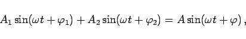
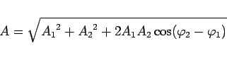
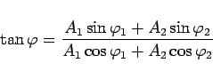
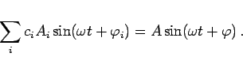

Inhalt Index DeskTop Bronstein

 Funktionen und ihre Darstellung Trigonometrische Funktionen (Winkelfunktionen) Beschreibung von Schwingungen
Funktionen und ihre Darstellung Trigonometrische Funktionen (Winkelfunktionen) Beschreibung von Schwingungen


Superposition oder Überlagerung von Schwingungen nennt man im einfachsten Falle die Addition zweier Schwingungen mit gleicher Frequenz. Sie führt wieder auf eine harmonische Schwingung mit derselben Frequenz:
|  | (2.129a) |
wobei
|  | (2.129b) |
und
|  | (2.129c) |
bedeuten. Auch eine Linearkombination mehrerer allgemeiner Sinusfunktionen gleicher Frequenz führt wieder auf eine allgemeine Sinusfunktion (harmonische Schwingung) mit derselben Frequenz:
|  | (2.130) |
Die Größen A und  können mit Hilfe eines Vektordiagramms bestimmt werden:
können mit Hilfe eines Vektordiagramms bestimmt werden: